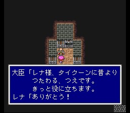

타이쿤성
게임의 출발지에서 가장 가까우면서도 운석에 가로막혀 갈 수 없었던 타이쿤성에
가봅시다. 성 사람들은 레나를 반기고, 사람들은 레나가 성에 돌아오기를 바라지만
아버지를 찾아야 한다는 레나의 의지는 굳건합니다. 일행은 성에서 하루 쉬게 되는데..
레나는 비로소 파리스와 자신의 관계를 어렴풋이 눈치챕니다.
성에서 돌아다녀
보면 어렸을 때 잃어버린 레나의 언니에 대한 정보를 들을 수 있습니다.
아이템들이 꽤 많으니 챙겨갑시다. 당장 필요없는 것들도 있지만 난중에
다 피가 되고 살이 되니..

메시지에 !가 붙는 코테이지 두 개는 월스성 지하의 좀도둑을 풀어줄 경우 나오지 않습니다.